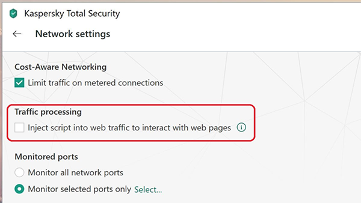
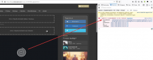

Если у Вас установлен антивирус Касперского Kaspersky Internet Security (KIS), в нем активируется функция, которая встраивает скрипт
main.js во все страницы посещаемые Вами в браузере, и впоследствии блокирует нормальную работу сайтов (Joomla, Bitrix, Умные дома, QIWI кошелек) из-за ошибки в коде (авторизации, VPN, и др.).2015 год, 2016 год, 2018 год, 2018 год, 2018 год, 2018 год
С каждым новым обновлением, новые ошибки, в 2019 году они активно начали появляться в сентябре/октябре и вот на февраль 2020 года до сих пор есть репорты (возможно это старые версии KIS).
ns.GetCommandSrc is not a function
28 января 2020, 26 января 2020, 20 декабря 2019, 19 ноября 2019, 23 октября 2019, 19 октября 2019, 2 октября 2019, 6 сентября 2019
В результате этого бага, иногда (когда
main.js загружается быстрее остальных скриптов) происходит «вечная загрузка», так как все JS сценарии на странице останавливаются.
В поддержке KIS говорят, что проблема была, но уже исправлена в новых версиях, и единственной их рекомендацией является отключение функции инъекции
Settings -> Additional -> Network.Если Вы используете KIS (не используйте никакие антивирусы, кроме стандартного Windows) и замечаете в консоли браузера ошибки во встраиваемом скрипте
main.js, при посещении сайтов, сразу создавайте технический запрос на оф. сайте Касперского со скриншотами, возможно, чем больше будет обращений, тем быстрее они будут исправлять ошибки.